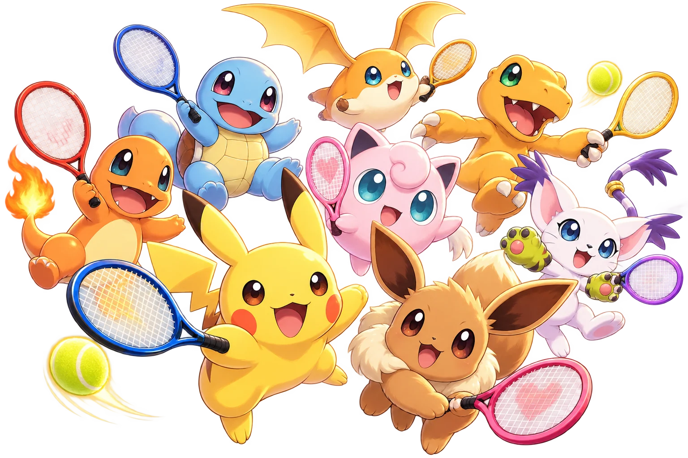

SMALL FRIENDS. BIG RALLIES.
오늘은 어떤 친구와 한 판 할까요?
NOLJA · MONSTER RALLYLET’S MAKE A RALLY!
몬스터
테니스MONSTER RALLY
작고 귀여운 친구들의
통통 튀는 테니스 대회.

FRIENDLY MATCH / 시범 경기
조이콘 · 키보드 · 게임패드 1–2인 플레이 이동은 자동으로
READY TO RALLY?
오늘의 매치
Enter 키로도 시작할 수 있어요
휘두르는 재미, 조이콘과 함께
키보드만으로도 바로 플레이할 수 있어요.
컨트롤러 상태 · 연결 방법
윈도우 블루투스에서 조이콘 측면의 동그란 버튼을 길게 눌러 페어링한 뒤, ‘조이콘 연결’을 눌러주세요. 두 개를 연결하려면 한 번씩 눌러주세요.
그래픽 · 플레이 설정
그래픽 품질
공을 칠 자리에 줄어드는 원이 나타나요. 자꾸 ‘늦음’이 나면 타이밍 보정을 올려보세요.
조이콘으로 포핸드·백핸드를 볼 때 방향을 반대로 봐요.
끄면 반대쪽으로 휘둘러도 제대로 맞아요. 아이들과 할 때 좋아요.
점수와 아웃·폴트를 소리 내어 불러줘요.
소리 크기
메뉴에선 음악, 경기 중엔 관중 소리가 나와요. 0이면 꺼져요.